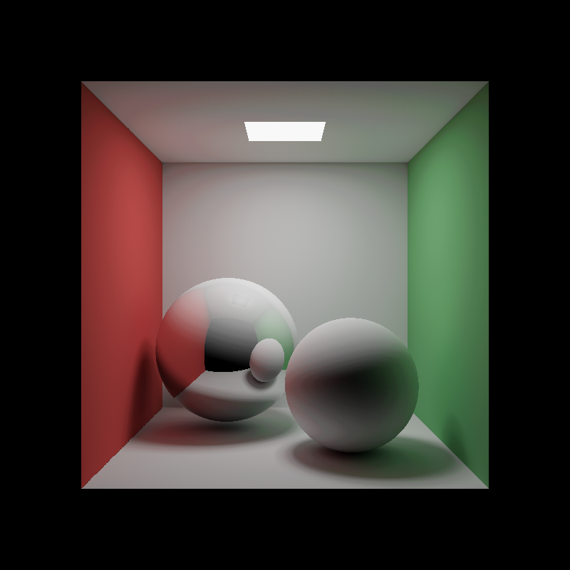

New Jersey Institute of Technology
Interactive Computer Graphics CS 438 / CS 657
Assignment 5
Date: Spring 2026
Due: See CANVAS Schedule
Tasks
Assignment 5 is a Cornell-box compute-shader ray tracer in WebGPU. The renderer
runs entirely in a single compute pass that writes radiance to an
rgba16float storage texture; a fullscreen blit pass then tone-maps
and gamma-corrects the result onto the canvas. The graded path follows
Ray Tracing in One Weekend (book 1): primary rays, sphere intersection,
Lambertian diffuse, and metal reflection.
Graded tasks live in resources/webgpu-task5.wgsl.
Search for TODO_A5 to find each task's location; each block
is preceded by a comment describing what to implement. Tasks 1 and 2a are
provided as worked examples — read them as reference patterns. Optional bonus
extensions live in the BONUS_A5 section at the bottom of the same
file (search for BONUS_A5).
Total: 25 points — T2b (6) + T3 (10) + T4 (9). T1 and T2a are worked examples (0 points). Bonus tasks B1–B4 are ungraded.
Scene conventions:
- PBRT-style Cornell box.
+Yup. Box bounds:x ∈ [-1, +1],y ∈ [0, 2],z ∈ [-1, +1]. - Eight analytic primitives (5 walls, 1 ceiling area light, 2 spheres —
one diffuse, one metal) defined in
resources/scene.js. - Camera looks at
(0, 1, 0)from outside the open front face of the box; drag to orbit, right-drag or scroll wheel to dolly.
Notes:
- The documentation (below the canvas) of your solution also contributes to grading.
- Assignment questions go on the CANVAS forum.
- Do not write individual emails with assignment questions.
Reading:
- Ray Tracing in One Weekend (Peter Shirley) — camera (Ch 4), sphere intersection (Ch 5), antialiasing (Ch 7), diffuse materials (Ch 8), metal (Ch 9). Covers the math for the entire graded path (Tasks 1, 2b, 3, 4); code is C++ but maps directly to WGSL.
- Ray Tracing: The Rest of Your Life — Monte Carlo integration, area-light direct lighting, cosine-weighted hemisphere sampling, progressive accumulation, the BRDF·cos/pdf = albedo identity. Reference for bonus B2 (NEE), B3 (running-average accumulation), and B4 (cosine sampling).
- Fast, Branchless Ray/Bounding Box Intersections (Tavian Barnes) — the slab method, three pages. Reference for bonus B1.
1. Primary Ray Generation (worked example — 0 points)
Task 1: Pinhole Camera in cs_main
Provided as a worked example. Read the filled-in block in
resources/webgpu-task5.wgsl (search for TODO_A5 : Task 1):
it shows how to build a per-pixel pinhole ray from the camera basis. The image-space
pixel center is converted to NDC, and the world-space ray direction is
normalize(forward + ndc.x * right - ndc.y * up), where
right and up are pre-scaled by
tan(fov/2) * aspect and tan(fov/2) on the JS side. The
minus sign on ndc.y * up flips the image-space top-down y to NDC's
bottom-up y. Understand it before you touch the later tasks.
2. Sphere Intersection (6 points; 2a worked, 2b graded)
Task 2a: Plane intersection (worked example)
intersectPlane is filled in for you in
resources/webgpu-task5.wgsl (search for TODO_A5 : Task 2a).
Read it carefully — it shows the shape every intersection routine follows:
compute the per-shape t, reject if t < T_EPS or the hit
is out of the shape's bounds, fill the Hit struct (t,
world-space pos, outward normal), and return
missHit() on failure. Box intersection (slab method) is moved to
bonus B1.
Task 2b: Sphere intersection (6 points)
Implement intersectSphere in
resources/webgpu-task5.wgsl (search for TODO_A5 : Task 2b),
following the same shape as Task 2a. Solve
‖rayOrigin + t·rayDir − center‖² = r²
for t, pick the nearest root in front of the ray, and set the
outward normal to normalize(hitPos − center). Reference:
Ray Tracing in One Weekend, Ch 5.
3. Lambert + Phong direct shading (10 points)
Task 3: shadeLambertPhong(N, L, V, albedo, ks, shininess)
The framework already does next-event estimation (NEE): at every non-emissive hit it picks a uniform random sample on the ceiling area light, casts a shadow ray, and computes the irradiance arriving at the surface. Your job is to write the local shading evaluator — the same Lambert + Phong model you wrote in the rasterization assignments — that turns that incoming light into outgoing radiance from this surface.
Implement shadeLambertPhong(N, L, V, albedo, ks, shininess) in
resources/webgpu-task5.wgsl (search for
TODO_A5 : Task 3). Inputs: surface normal N,
direction to light L, direction to viewer V (all
unit), surface albedo (diffuse rgb), ks (specular
strength), shininess (Phong exponent). Return:
diffuse = albedo · max(0, N·L) R = reflect(-L, N) specular = ks · max(0, R·V)shininess result = diffuse + vec3(specular)
The framework multiplies your result by the light's irradiance
(Le · cosθl · A / d²
with visibility folded in) — you do not handle distance falloff, shadows, or
area sampling here. References: the Phong shading prose from earlier in this
course, plus the A4 specular shader you wrote.
The bounce-loop wiring inside cs_main (where
shadeLambertPhong is called and where material parameters are
derived from the metal flag) is plain framework code — no banner, no edit
needed there. Your only T3 work is the body of shadeLambertPhong.
4. Metal reflection (9 points)
Task 4: Mirror reflection for the indirect bounce
The Cornell scene contains two spheres: one diffuse, one metal (the metal flag
is packed into prim.extra.y by scene.js). Inside the
narrow TODO_A5 : Task 4 banner inside cs_main's
bounce loop, branch on isMetal: when the flag is set, pick a
perfect mirror reflection of the incoming ray about the surface normal — WGSL
has a builtin for that (reflect). Otherwise, fall through to the
book-1 random Lambertian scatter (what the stub already does). Throughput
attenuation by albedo and the ray-origin offset stay outside your branch as
framework wiring.
Visible result: the metal sphere reflects the room around it (mirror reflection from T4) and shows a tight Phong specular highlight from the ceiling area light (direct lighting from T3). The two effects coexist naturally — they're the indirect and direct terms of the same surface.
Reference: Ray Tracing in One Weekend, Ch 9 (metal). No Fresnel, no fuzz — book 1's first metal pass is a perfect mirror.
Bonus / Self-Study (Ungraded)
The bonus extensions are not graded but are encouraged self-study. Each lives
in a banner-bracketed block in resources/webgpu-task5.wgsl; search
for BONUS_A5 to locate them.
- B1 — Box intersection (slab method).
Reference: Tavian Barnes,
"Fast, Branchless Ray/Bounding Box Intersections".
Adding a box back into the scene needs a two-file edit (bump
PRIM_COUNTin bothscene.jsand the WGSL); the teaching comment inside the B1 block walks through it. - B2 — Direct lighting via next-event estimation. Already
implemented in the framework (study
sampleDirectLightin the WGSL). The on-page NEE checkbox toggles it on/off — flip it off to see the noisy book-1 view that motivates NEE in the first place. No code to write; this is a reading task. Reference: Ray Tracing in One Weekend, Book 3 (Light Sampling chapter). - B3 — Multi-frame progressive accumulation.
Already implemented in the framework (study the
u_frame.accumEnabledbranch at the end ofcs_mainin the WGSL). The on-page Multi-frame accumulation checkbox toggles it on/off; the Reset accumulation button restarts the running average. Warning: averaging hides bugs — a buggyshadeLambertPhongaverages to consistent-looking-but- wrong output. Toggle accumulation off while implementing or debugging T3; the per-frame noise is your fast diagnostic. No code to write; this is a reading task. Reference: Ray Tracing in One Weekend, Book 3 and PBRT's chapter on Monte Carlo image synthesis. - B4 — Cosine-weighted hemisphere sampling (Malley's method).
Drop-in replacement for
randomInUnitSpherein the diffuse indirect bounce; cuts variance because the BRDF·cos/pdf factor collapses toalbedo, matching the throughput update. Implement the body ofcosineWeightedHemispherein the WGSL and swap your indirect-bounce call to use it. Reference: Ray Tracing in One Weekend, Book 3.
Controls
Drag the canvas to orbit. Right-drag or scroll wheel to dolly.
Vertical FOV: 50°
Max bounces: 4
frame: 0
Reference render
Use the Save reference render button above to dump the current
canvas to a PNG. With multi-frame accumulation on (default), let the
image converge for ~5–10 seconds of stillness before saving so the
indirect noise integrates out. Save your PNG next to this page as
img/reference_render.png.

Documentation
Implementation report
Task 2b: Sphere Intersection
Since rayDir is a unit vector the quadratic simplifies to t² + 2bt + c = 0, dropping the a coefficient to 1 and giving t = -b ± sqrt(b²-c). The smaller root is tried first and the larger one is the fallback for when the ray starts inside the sphere. Both are rejected below T_EPS to avoid self-intersection, and the outward normal is normalize(hitPos - center).
Task 3: Lambert + Phong shading
This is the same model from the rasterization assignments where diffuse is albedo * max(0, dot(N,L)), the reflection direction comes from reflect(-L, N), and specular is ks * pow(max(0, dot(R,V)), shininess). The function only handles local shading; the framework handles distance falloff and the area PDF.
Task 4: Metal reflection
The bounce direction branches on isMetal. For metal it uses reflect(rayD, hit.normal) to get a perfect mirror direction, and for diffuse it keeps the original Lambertian scatter using normalize(hit.normal + randomInUnitSphere(rng)).
NEE on vs off
With NEE on the scene is well lit and converges fast since a shadow ray is explicitly sent to the area light at every hit. When I turned it off the box went extremely dark and noisy because the only way to collect light is for a random bounce to accidentally hit the small ceiling light, which almost never happens.
Accumulation on vs off
With accumulation off each frame stands alone so the indirect color bleed shows a lot of grain. With it on the running average smooths that out after a few seconds of stillness. As noted in the assignment, keeping it off while working on T3 was important since the average blends away bugs and makes wrong output look correct.